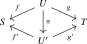
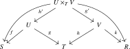
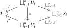
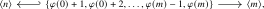
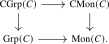

We now move to commutative monoids in an \(\infty \)-category. Just as for monoids, these will be defined as functors out of a suitable indexing category that encodes all the operations we have in a commutative monoid.
For a commutative monoid \(M\), given a tuple of elements \((x_s)_{s \in S}\) indexed by a finite set \(S\), we can form the sum \(\sum _{s \in S} x_s\). Commutativity says precisely that this sum is independent of any chosen ordering of \(S\). Writing \(M^S := \prod _{s \in S} M\) for the \(S\)-fold product, we thus have addition maps \(M^S \to M\) for every finite set \(S\).
How do these addition maps behave with respect to maps of finite sets? Let \(\Fin \) denote the category of finite sets and all maps between them. For a map \(g\colon S \to T\) of finite sets, there is an induced map \(g_{\oplus }\colon M^S \to M^T\) given by summing over fibers: the \(t\)-th component of \(g_{\oplus }((x_s)_{s \in S})\) is \(\sum _{s \in g^{-1}(\{t\})} x_s\). This makes the assignment \(S \mapsto M^S\) into a functor \(\Fin \to \Set \).
Just as for monoids, we should not look at arbitrary functors \(\Fin \to C\), but only at those satisfying a Segal-type condition of the form \(M(S) \cong M(*)^S\). To phrase this condition precisely, we need to specify projections \(M(S) \to M(*)\) for each \(s \in S\), that is, we need an a priori way to compare \(M(S)\) with the product \(\prod _{s \in S} M(*)\). Observe that the \(S\)-fold product \(M^S\) is not only covariantly functorial in \(S\) via addition, but also contravariantly functorial via restriction: a map \(f\colon S \to T\) induces a restriction map \(f^*\colon M^T \to M^S\) given by \(f^*(x_t)_{t \in T} := (x_{f(s)})_{s \in S}\).
To encode commutative monoids, we need both functorialities, addition and restriction, packaged into a single category. The objects of this category are finite sets. What should the morphisms from \(S\) to \(T\) be? These should encode the operation of ‘first restricting along \(f\), then adding along \(g\)’: given maps \(f\colon U \to S\) and \(g\colon U \to T\), we obtain a composite \[ M^S \xrightarrow {f^*} M^U \xrightarrow {g_{\oplus }} M^T, \] where the component of the output at \(t \in T\) is given by summing \(x_{f(u)}\) over all \(u \in g^{-1}(\{t\})\). Thus, a morphism from \(S\) to \(T\) should be a pair of maps \(S \leftarrow U \to T\), that is, a span from \(S\) to \(T\).
What about composition? Suppose we first apply \(S \xleftarrow {f} U \xrightarrow {g} T\) and then \(T \xleftarrow {h} V \xrightarrow {k} R\). The first operation sends \((x_s)_{s \in S}\) to \((y_t)_{t \in T}\) where \(y_t = \sum _{u \in g^{-1}(\{t\})} x_{f(u)}\). Applying the second operation, the component at \(r \in R\) is \[ \sum _{v \in k^{-1}(\{r\})} y_{h(v)} \quad = \quad \sum _{v \in k^{-1}(\{r\})} \sum _{u \in g^{-1}(\{h(v)\})} x_{f(u)}. \] This double sum ranges over pairs \((u,v)\) with \(g(u) = h(v)\) and \(k(v) = r\). Setting \(P := \{(u,v) \in U \times V \mid g(u) = h(v)\} = U \times _T V\), with its projections \(h'\colon P \to U\) and \(g'\colon P \to V\), we see that:
- the fiber \(g^{-1}(\{h(v)\})\) is in bijection with the fiber \((g')^{-1}(\{v\})\), and
- the element \(f(u)\) can be written as \((f \circ h')(u,v)\).
Hence the double sum equals \(\sum _{p \in (k \circ g')^{-1}(\{r\})} x_{(f \circ h')(p)}\), which is exactly the result of applying the span \(S \xleftarrow {f \circ h'} P \xrightarrow {k \circ g'} R\). In other words, composing ‘first add along \(g\), then restrict along \(h\)’ gives the same result as ‘first restrict along \(h'\), then add along \(g'\)’. Spans thus compose by taking pullbacks, leading to the span category of finite sets.
Construction 5.3.1 (Span category). There is an \(\infty \)-category \(\Span (\Fin )\), called the span category of finite sets. Its objects are finite sets, and for finite sets \(S\) and \(T\) its hom animae are given by the groupoids

of spans from \(S\) to \(T\); so the objects of this groupoid are spans \(S \leftarrow U \to T\) and the morphisms are isomorphisms of spans. The identity span is given by \(S \xleftarrow {\id _S} S \xrightarrow {\id _S} S\), and composition of spans is defined by taking pullbacks:

Remark 5.3.2. Since the hom animae of \(\Span (\Fin )\) are groupoids rather than sets, \(\Span (\Fin )\) is a \((2,1)\)-category rather than a \(1\)-category. The rigorous construction of this \(\infty \)-category is deferred to Chapter 13; for now, it suffices to know that \(\Span (\Fin )\) exists and behaves as described above.
Lemma 5.3.3. The \(\infty \)-category \(\Span (\Fin )\) is semiadditive, with biproducts given by disjoint unions of finite sets.
Proof. Consider finite sets \(S_i\) for \(i=1, \dots , n\). We have spans of the form \[ \bigsqcup _{i=1}^n S_i \hookleftarrow S_i \xrightarrow {\id _{S_i}} S_i \] We claim that these morphisms exhibit \(\bigsqcup _{i=1}^n S_i\) as a product of the sets \(S_i\) in \(\Span (\Fin )\). Indeed, note that for every map \(U \to \bigsqcup _{i=1}^n S_i\) of finite sets we may write \(U = \bigsqcup _{i=1}^n U_i\), where \(U_i\) is the preimage of \(S_i\). This gives the desired equivalence of groupoids

By the dual argument (reversing a span gives a bijection between spans from \(S\) to \(T\) and spans from \(T\) to \(S\)) we see that similarly the spans \[ S_i \xleftarrow {\id _{S_i}} S_i \hookrightarrow \bigsqcup _{i=1}^n S_i. \] exhibit \(\bigsqcup _{i=1}^n S_i\) also as the coproduct of the \(S_i\) in \(\Span (\Fin )\). The composite from \(S_i\) into this coproduct and then to the \(j\)-th product factor is represented by the pullback \(S_i \times _{\bigsqcup _k S_k} S_j\). It is the identity span when \(i=j\) and the zero span otherwise. Hence the canonical comparison from the coproduct to the product is an isomorphism. For \(n=0\), the same argument says that the empty set is a zero object. Thus \(\Span (\Fin )\) is semiadditive. □
Definition 5.3.4 (Commutative monoid). Let \(C\) be an \(\infty \)-category with finite products. We define a commutative monoid in \(C\) to be a product-preserving functor \[ M\colon \Span (\Fin ) \to C. \] We denote by \[ \CMon (C) \subseteq \Fun (\Span (\Fin ),C) \] the full subcategory spanned by the commutative monoids. We refer to the evaluation \(M(*)\) at the one-point set as the underlying object of \(M\). We will sometimes abuse notation and simply refer to \(M(*)\) as \(M\).
Remark 5.3.5 (Restriction and addition maps). Let \(M\colon \Span (\Fin ) \to C\) be a commutative monoid. Every map \(f\colon S \to T\) of finite sets determines two ‘half-degenerate’ spans \[ f^* \quad = \quad (T \xleftarrow {f} S \xrightarrow {\id _S} S) \qquadtext { and } f_{\oplus } \quad = \quad (S \xleftarrow {\id _S} S \xrightarrow {f} T), \] called the restriction and the addition spans, respectively. Since products in \(\Span (\Fin )\) are computed as disjoint unions by Lemma 5.3.3, the condition that \(M\) preserves finite products means that for every finite set \(S\) the map \[ (e_s^*)_{s \in S} \colon M(S) \to M^S := \prod _{s \in S} M(*) \] is an isomorphism, where \(e_s\colon \{s\} \hookrightarrow S\) is the inclusion. We will henceforth identify \(M(S)\) with \(M^S\). It follows that every map \(f\colon S \to T\) defines both a restriction map \(f^*\colon M^T \to M^S\) as well as an addition map \(f_{\oplus }\colon M^S \to M^T\), functorially in \(f\). As a special case, the maps \(\emptyset \to *\) and \(* \sqcup * \to *\) in \(\Fin \) then yield the unit and addition: \[ 0\colon * \to M \qquadtext { and } +\colon M \times M \to M. \]
Definition 5.3.6 (Commutative group). A commutative monoid \(M\) is called a commutative group if the shear map \((\pr _1,+)\colon M \times M \to M \times M\) is an isomorphism. We denote by \[ \CGrp (C) \quad \subseteq \quad \CMon (C) \] the full subcategory spanned by the commutative groups in \(C\).
5.3.1 Alternative definition
We now give an alternative characterization of commutative monoids that is commonly used in the literature and goes back to Segal (1968). This characterization uses the category of finite pointed sets rather than the full span category.
Definition 5.3.7 (Segal condition). Let \(C\) be an \(\infty \)-category with finite products. Denote by \(\Fin _*\) the category of finite pointed sets, whose objects are pairs \((S,*)\) consisting of a finite set \(S\) and a distinguished basepoint \(* \in S\), and whose morphisms are basepoint-preserving maps. For a finite set \(S\), we write \(S_+ := S \sqcup \{*\}\) for \(S\) with an added disjoint basepoint.
A functor \(M\colon \Fin _* \to C\) is said to satisfy the Segal condition if for every finite set \(S\) the canonical map \[ M(S_+) \to \prod _{s \in S} M(\{s\}_+) \] induced by the pointed maps \(S_+ \to \{s\}_+\) is an isomorphism, where the pointed map sends everything except for \(s \in S\) to the base point of \(\{s\}_+\). We denote by \[ \Fun ^{\Segal }(\Fin _*,C) \subseteq \Fun (\Fin _*,C) \] the full subcategory spanned by functors satisfying the Segal condition.
Lemma 5.3.8. Consider the wide subcategory \(\Span (\Fin ,\inj ,\all )\) of \(\Span (\Fin )\) whose morphisms are those spans \(S \hookleftarrow U \to T\) for which the left-pointing map is an injection. This is a 1-category, and there is an equivalence of 1-categories \(\Fin _* \simeq \Span (\Fin ,\inj ,\all )\).
Proof. It is clear that \(\Span (\Fin ,\inj ,\all )\) is a 1-category: given two injections \(U \hookrightarrow S\) and \(U' \hookrightarrow S\), if there exists a bijection \(U \iso U'\) over \(S\), then it is unique.
We now construct mutually inverse functors to \(\Fin _*\). Define a functor \[ \Phi \colon \Span (\Fin ,\inj ,\all ) \to \Fin _* \] as follows: on objects, \(\Phi \) sends a finite set \(S\) to \(S_+ = S \sqcup \{*\}\). On morphisms, \(\Phi \) sends a span \(S \hookleftarrow U \to T\) (where the left-pointing map is an injection) to the pointed map \(S_+ \to T_+\) that agrees with \(U \to T\) on \(U\) and sends the complement \(S \setminus U\) (together with the basepoint of \(S_+\)) to the basepoint of \(T_+\).
Conversely, define a functor \[ \Psi \colon \Fin _* \to \Span (\Fin ,\inj ,\all ) \] as follows: on objects, \(\Psi \) sends a finite pointed set \((S,*)\) to \(S \setminus \{*\}\). On morphisms, \(\Psi \) sends a pointed map \(f\colon (S,*) \to (T,*)\) to the span \[ S \setminus \{*\} \hookleftarrow f^{-1}(T \setminus \{*\}) \xrightarrow {f} T \setminus \{*\}, \] where the left-pointing map is the inclusion. One readily verifies that \(\Phi \) and \(\Psi \) are inverse equivalences. □
Proposition 5.3.9. Let \(C\) be an \(\infty \)-category with finite products. Restriction along the inclusion \(i\colon \Fin _* \simeq \Span (\Fin ,\inj ,\all ) \hookrightarrow \Span (\Fin )\) induces an equivalence of \(\infty \)-categories \[ i^*\colon \CMon (C) \iso \Fun ^{\Segal }(\Fin _*,C). \] The inverse is given by right Kan extension along \(i\).
Proof. It is clear from the definitions that restriction along \(i\) sends product-preserving functors to functors satisfying the Segal condition.
The functor \(i^*\) is conservative: if \(\alpha \colon M \to N\) is a natural transformation between commutative monoids such that \(i^*\alpha \) is an isomorphism, then in particular \(\alpha _*\colon M(*) \to N(*)\) is an isomorphism, and since both \(M\) and \(N\) preserve products we have that the map \(\alpha _S\colon M(S) \cong M(*)^S \to N(*)^S \cong N(S)\) is an isomorphism for all finite sets \(S\).
It thus suffices to show that for every functor \(M\colon \Fin _* \to C\) satisfying the Segal condition, the right Kan extension \(i_*(M)\) exists and the counit map \(i^* i_*(M) \to M\) is an isomorphism. By the pointwise formula for right Kan extensions, we must show that for every finite set \(X\) the canonical map \[ \lim _{(X \to S) \in i_{X/}} M(S) \longrightarrow M(X) \] is an isomorphism, where the limit is taken over the relative slice category \(i_{X/} = \Span (\Fin ,\inj ,\all ) \times _{\Span (\Fin )} \Span (\Fin )_{X/}\). Consider the embedding \[ \phi \colon (\Fin \catop )_{X/} \times _{\Fin \catop } \Fin _{\inj }\catop \hookrightarrow \Span (\Fin ,\inj ,\all ) \times _{\Span (\Fin )} \Span (\Fin )_{X/} \] that sends a map \(f\colon S \to X\) to the span \(X \xleftarrow {f} S \xrightarrow {\id } S\). This functor \(\phi \) has a right adjoint, given by sending a span \(X \leftarrow U \to S\) to the left-pointing map \(U \to X\). By Corollary 21.5.7, the functor \(\phi \) is therefore initial, so the limit may be computed over the left-hand category.
On this category, the restriction of \(M\) sends a map \(f\colon S \to X\) to \(M(S) \cong M(*)^S = \lim _{s \in S} M(*)\) (using the Segal condition). By the formula for iterated limits from Theorem 21.2.11, we may thus write the left-hand side as the limit of \(M(*)\) over the set \(\colim _{(X \to S)} S\). It thus suffices to show that \(X\) is the colimit of the forgetful functor \[ \Fin _{/X} \times _{\Fin } \Fin _{\inj } \longrightarrow \Fin . \] This functor is left Kan extended from the full subcategory spanned by the inclusions \(\{x\} \hookrightarrow X\) for \(x \in X\), and the colimit over this subcategory is precisely \(X\). Moreover, the product projections in \(\Span (\Fin )\) have injective left legs and therefore belong to the wide subcategory on which \(i\) is defined. The product comparison maps for \(i_*M\) consequently agree, under the counit, with the Segal maps of \(M\) and are isomorphisms. Thus \(i_*M\) preserves finite products. □
Remark 5.3.10. The \(\infty \)-category \(\CMon (C)\) is usually defined as \(\Fun ^{\Segal }(\Fin _*,C)\) in the literature; this was also the original approach taken by Segal (1968) after which the Segal condition is named. Proposition 5.3.9 shows that our definition agrees with this classical one.
5.3.2 The underlying monoid of a commutative monoid
As the name suggests, every commutative monoid has an underlying monoid.
Construction 5.3.11. We will construct a functor \(\Cut \colon \simp \catop \to \Span (\Fin , \inj ,\all ) \subseteq \Span (\Fin )\):
- On objects, it sends \([n]\) to the set \(\lra {n} := \{1, \dots , n\}\).
- On morphisms, it sends \(\phi \colon [m] \to [n]\) to the span where the left-pointing map is the inclusion and the right-pointing map sends \(i\) to the unique \(1 \leq j \leq m\) such that \(\phi (j-1) < i \leq \phi (j)\).

More conceptually, we may think of the set \(\Cut (P)\) for a poset \(P\) as the set of ‘Dedekind cuts’ of \(P\), defined as pairs \((P_0, P_1)\) of non-empty subposets \(P_0,P_1 \subseteq P\) satisfying \(P = P_0 \cup P_1\) and \(p_0 < p_1\) for all \(p_0 \in P_0\) and \(p_1 \in P_1\). We want to think of the element \(k \in \{1, \dots , n\} = \Cut ([n])\) as the following partition of \([n]\): \[ k \quad \leftrightsquigarrow \quad (\{0, \dots , k-1\}, \{k, \dots , n\}). \] On morphisms, \(\Cut (\phi )\) is then simply given by taking preimages of the two subsets \(P_0\) and \(P_1\), which is only defined if both of these preimages are non-empty.
Alternatively, we may think of the set \(\Cut ([n])\) as labeling the \(n\) inequalities in the partially ordered set \([n]\) that we can use to cut \([n]\) into two pieces: \[ [n] \quad = \quad \{ 0 \,\, \overset {1}{\leq } \,\, 1 \,\, \overset {2}{\leq } \,\, 2 \,\, \overset {3}{\leq } \,\, \dots \,\, \overset {n}{\leq } \,\, n\}. \] This is the bookkeeping already used in Equation 5.1: the middle term of the span \(\Cut (\phi )\) consists of those inequalities of \([n]\) which lie in one of the blocks cut out by \(\phi \), the right-pointing map records for each of them the inequality of \([m]\) whose block contains it, and the left-pointing inclusion discards the inequalities of \([n]\) lying in no block at all.
Exercise 5.3.12. Let \(M\colon \Span (\Fin ) \to C\) be a commutative monoid. Show that \(M \circ \Cut \colon \simp \catop \to C\) defines a monoid in \(C\), whose multiplication agrees with the addition map of \(M\). Deduce that \(M \circ \Cut \) is a group if and only if \(M\) is a commutative group, and that there is a pullback square

In particular, we obtain forgetful functors \[ U := \Cut ^*\colon \CMon (C) \to \Mon (C) \qquadtext { and } U := \Cut ^*\colon \CGrp (C) \to \Grp (C). \]
Warning 5.3.13. For a classical 1-category \(C\), the forgetful functor \(\CMon (C) \to \Mon (C)\) is fully faithful by Chapterexercise 5.6. For a general \(\infty \)-category, this is not true: commutativity is no longer a property of a monoid, but additional structure one needs to provide.
5.3.3 Monoids and commutative monoids in semiadditive \(\infty \)-categories
For a semiadditive \(\infty \)-category \(C\), it turns out that every object admits a unique structure of a (commutative) monoid. The idea is simple: in a semiadditive category, every object \(M\) comes equipped with a canonical addition map \[ +\colon M \times M \iso M \oplus M \xrightarrow {\nabla } M, \] given by the fold map of the biproduct, and a zero map \(0\colon * \to M\), the unique map from the initial object. It readily follows from the universal property of coproducts that this operation is unital, associative and commutative, resulting in a commutative monoid object in the homotopy category \(\Ho (C)\). To promote \(M\) to a genuine commutative monoid object in \(C\), we need these identities to hold coherently. While this is again a consequence of the universal property of coproducts, the required bookkeeping is more difficult as we need to handle all coherences simultaneously. The goal of this subsection is to carry out this bookkeeping. Only the statements of the results below will be used later, and the proofs all follow the same pattern of restriction and Kan extension along suitable subcategories, so they may be skimmed on a first reading. Let us start with the non-commutative case.
Proposition 5.3.14. Let \(C\) be a semiadditive \(\infty \)-category. Then the forgetful functor \(\Mon (C) \to C\) is an equivalence. If \(C\) is additive, then also the forgetful functor \(\Grp (C) \to C\) is an equivalence.
Proof. Let \(\simp ^{\leq 1}_{\mathrm {int}} \subseteq \simp \) be the subcategory with objects \([0]\) and \([1]\) and whose only non-identity morphisms are the two face maps \(d^0, d^1\colon [0] \to [1]\). We will show that restriction along the inclusions \[ j\colon \{[1]\} \hookrightarrow (\simp ^{\leq 1}_{\mathrm {int}})\catop \qquadtext {and} i\colon (\simp ^{\leq 1}_{\mathrm {int}})\catop \hookrightarrow \simp \catop \] define equivalences \[ \Mon (C) \iso \Fun ^{*}\big ((\simp ^{\leq 1}_{\mathrm {int}})\catop , C\big ) \iso C, \] where \(\Fun ^{*}\) denotes the full subcategory of those functors whose value at \([0]\) is terminal.
For the first equivalence, we use left Kan extension along \(i\). We apply the pointwise formula (Theorem 21.4.3) to compute the left Kan extension. For this, we need to understand the relative slice \(i_{/[n]}\) for each \([n] \in \simp \). Objects of this category are pairs \((x, \phi )\) where \(x \in \{[0], [1]\}\) and \(\phi \colon x \to [n]\) is a morphism in \(\simp \catop \), i.e. a morphism \([n] \to x\) in \(\simp \). There are \(n+2\) order-preserving maps \([n] \to [1]\), which we may label by the sequence of values they take: there are the two constant maps \(\underline {0}, \underline {1}\colon [n] \to [1]\), and for each \(1 \leq k \leq n\) a map \(\phi _k\) sending \(0, 1, \ldots , k-1\) to \(0\) and \(k, \ldots , n\) to \(1\). There is also a unique map \(\star \colon [n] \to [0]\). For morphisms in \(i_{/[n]}\), we observe that the only non-identity morphisms in \((\simp ^{\leq 1}_{\mathrm {int}})\catop \) are the maps \([1] \to [0]\) induced by the face maps \(d^0, d^1\colon [0] \to [1]\). By checking the commutative triangles, one sees that the only non-identity morphisms in \(i_{/[n]}\) are the maps \(\underline {0} \to \star \) and \(\underline {1} \to \star \). It follows that the category \(i_{/[n]}\) has precisely \(n+1\) connected components: there is a ‘span’ component \(\underline {0} \to \star \leftarrow \underline {1}\), and there are \(n\) isolated objects \(\phi _1, \ldots , \phi _n\).
Now let \(F\colon (\simp ^{\leq 1}_{\mathrm {int}})\catop \to C\) be a functor with \(F([0]) = *\), and write \(X := F([1])\). The left Kan extension \(i_!F\) evaluated at \([n]\) is the colimit over \(i_{/[n]}\) of the composite \(i_{/[n]} \to (\simp ^{\leq 1}_{\mathrm {int}})\catop \xrightarrow {F} C\). This colimit decomposes as a coproduct over the connected components. The span component contributes the colimit \(\colim (X \to * \leftarrow X) = *\), the terminal object, which is also initial in the pointed category \(C\). Each isolated object \(\phi _k\) contributes a copy of \(X\). Hence \((i_! F)([n]) \simeq X^{\sqcup n}\), the \(n\)-fold coproduct. Under these identifications, the Segal map \((i_!F)([n]) \to (i_!F)([1])^n\) is the canonical comparison from the \(n\)-fold coproduct of \(X\) to its \(n\)-fold product, hence is an isomorphism by semiadditivity. Thus \(i_!F\) is a monoid.
Conversely, let \(M\colon \simp \catop \to C\) be a monoid. There is a canonical comparison map from the left Kan extension of the restriction, \(i_! i^* M \to M\). To show this is an isomorphism, it suffices to check this at the underlying object \([1]\). There it is clear: as we just computed, the value at \([1]\) of both sides is simply \(M([1])\).
For the second equivalence, we use right Kan extension along \(j\). Since \(j\) is fully faithful, right Kan extension \(j_*\) is fully faithful whenever it exists. The relative slice \(j_{x/}\) over \(x \in \{[0], [1]\}\) is as follows: for \(x = [1]\), the identity \(\id _{[1]}\) is an initial object, so the limit evaluates to the original value. For \(x = [0]\), the relative slice is empty, so the limit is the terminal object. This shows that right Kan extension along \(j\) always exists and produces a functor in \(\Fun ^{*}((\simp ^{\leq 1}_{\mathrm {int}})\catop , C)\). Conversely, any functor with value \(*\) at \([0]\) is right Kan extended from \(\{[1]\}\).
For the claim about groups, note that if \(C\) is additive and \(M\) is a monoid in \(C\) with underlying object \(X\), then the shear map is given by \(\begin {psmallmatrix} \id _X & \id _X \\ 0 & \id _X \end {psmallmatrix}\colon X^2 \to X^2\). Its inverse is \(\begin {psmallmatrix} \id _X & -\id _X \\ 0 & \id _X \end {psmallmatrix}\), so every monoid is automatically a group. □
Remark 5.3.15. Once we know that \(\CMon (C)\) is semiadditive (which will be proved in general in Proposition 5.3.20), the present proposition applied to \(\CMon (C)\) gives an equivalence \(\Mon (\CMon (C)) \simeq \CMon (C)\), under which the canonical monoid structure on an object \(M \in \CMon (C)\) has multiplication given by the fold map \(M \oplus M \to M\), which agrees with the algebraic addition \(+\colon M \times M \to M\) of the commutative monoid structure. As a consequence, the monoid shear map \((\pr _1,m)\) from Definition 5.1.5 coincides with the algebraic shear map \((\pr _1,+)\) from Definition 5.3.6, and there are canonical identifications \[ \CMon (\Grp (C)) \quad \simeq \quad \Grp (\CMon (C)) \quad \simeq \quad \CGrp (C). \] The first equivalence is an instance of currying functors \(\Span (\Fin ) \times \simp \catop \to C\): being a commutative monoid in the first coordinate commutes with being a group in the second. The second equivalence uses that both sides are the full subcategory of \(\Mon (\CMon (C)) \simeq \CMon (C)\) spanned by those objects whose shear map is invertible.
Lemma 5.3.16 (A slice adjunction for spans). For every finite set \(S\), the inclusion of forward maps induces a functor \[ \Fin _{/S}\longrightarrow \Span (\Fin )_{/S} \] which admits a left adjoint. On objects, this left adjoint sends a span \[ T\xleftarrow {f}U\xrightarrow {g}S \] to the map \(g\colon U\to S\). The same construction restricts to the relative slices used below: \[ \Fin ^{\leq 1}_{/S}\longrightarrow \Span (\Fin ^{\leq 1})_{/S}. \]
Proof. There is a morphism in \(\Span (\Fin )_{/S}\) from the displayed span to the forward map \(g\colon U\to S\), represented by the span \(T\xleftarrow {f}U\xrightarrow {\id _U}U\). Composition with this morphism identifies maps from \(g\colon U\to S\) to a forward map \(V\to S\) with maps from the original span to \(V\to S\) in \(\Span (\Fin )_{/S}\). This is the required adjunction. □
Having established the case of monoids and groups, we now turn to commutative monoids and commutative groups.
Proposition 5.3.17. Let \(C\) be a semiadditive \(\infty \)-category. Then the forgetful functors \[ \CMon (C) \to \Mon (C) \to C \] are equivalences. If \(C\) is additive, then also the forgetful functors \[ \CGrp (C) \to \Grp (C) \to C \] are equivalences.
Proof. The equivalences \(\Mon (C) \iso C\) and \(\Grp (C) \iso C\) are Proposition 5.3.14. By Exercise 5.3.12, we have \(\CGrp (C) \simeq \CMon (C) \times _{\Mon (C)} \Grp (C)\). The case for commutative groups therefore follows from that of commutative monoids, so it remains to show that the forgetful functor \(\CMon (C) \to C\) is an equivalence.
The proof strategy is similar to, but more involved than, that of Proposition 5.3.14. Consider the following subcategories of \(\Span (\Fin )\): \[ * \hookrightarrow \Fin ^{\leq 1} \hookrightarrow \Span (\Fin ^{\leq 1}) \hookrightarrow \Span (\Fin ,\inj ,\all ) \hookrightarrow \Span (\Fin ). \] Here \(\Fin ^{\leq 1} \subseteq \Fin \) is the full subcategory on sets of cardinality at most \(1\), i.e. it has objects \(\emptyset \) and \(*\) and a single non-identity morphism \(\emptyset \to *\). We claim that restriction along each of these inclusions defines equivalences \begin {align*} \CMon (C) &= \Fun ^{\times }(\Span (\Fin ),C) \iso \Fun ^{\Segal }(\Span (\Fin ,\inj ,\all ),C) \\ &\iso \Fun ^{*}(\Span (\Fin ^{\leq 1}),C) \iso \Fun ^{*}(\Fin ^{\leq 1}, C) \iso C, \end {align*}
with inverses given by right, left, right and left Kan extension, respectively. Here \(\Fun ^{*}(-,-)\) denotes those functors that send the empty set to the terminal object of \(C\). For the first equivalence, this was proved in Proposition 5.3.9. The proof strategy for the other three equivalences is similar. We will spell out the details for the second equivalence, and leave the easier third and fourth equivalences to the reader.
Denoting the relevant inclusion by \(i\colon \Span (\Fin ^{\leq 1}) \hookrightarrow \Span (\Fin ,\inj ,\all )\), we need to show that the restriction functor \[ i^*\colon \Fun ^{\Segal }(\Span (\Fin ,\inj ,\all ),C) \to \Fun ^{*}(\Span (\Fin ^{\leq 1}),C) \] is an equivalence. Note that by semiadditivity of \(C\), a functor \(F\colon \Span (\Fin ,\inj ,\all ) \to C\) satisfies the Segal condition if and only if its restriction \(F\vert _{\Fin }\colon \Fin \to C\) is left Kan extended from the point. Similarly, a functor \(G\colon \Span (\Fin ^{\leq 1}) \to C\) satisfies \(G(\emptyset ) = *\) if and only if its restriction \(G\vert _{\Fin ^{\leq 1}}\colon \Fin ^{\leq 1} \to C\) is left Kan extended from the point. We now claim that left Kan extension along \(i\) restricts to a functor \[ i_!\colon \Fun ^{*}(\Span (\Fin ^{\leq 1}),C) \to \Fun ^{\Segal }(\Span (\Fin ,\inj ,\all ),C). \] To see this, let \(G\colon \Span (\Fin ^{\leq 1}) \to C\) be a functor satisfying \(G(\emptyset ) = *\). It will suffice to show that the restriction \(i_!(G)\vert _{\Fin }\) of the left Kan extension of \(G\) is itself the left Kan extension of \(G\vert _{\Fin ^{\leq 1}}\), since then it must be Kan extended from the point. If we let \(i'\colon \Fin ^{\leq 1} \to \Fin \) denote the inclusion, there is a canonical map \[ i'_!(G\vert _{\Fin ^{\leq 1}}) \to i_!(G)\vert _{\Fin }. \] Using the pointwise formula for Kan extensions, Theorem 21.4.3, we may compute both sides as colimits of \(G\) over the relative slices of \(i'\) and \(i\), and the previous comparison map is induced by the inclusion map \(\Fin ^{\leq 1}_{/S} \to \Span (\Fin ^{\leq 1})_{/S}\) of relative slices, for \(S \in \Fin \). Since this inclusion admits a left adjoint by Lemma 5.3.16, this functor is final by Corollary 21.5.7, and hence restriction along it does not change the value of the colimit.
Finally we observe that the Kan extension \(i_!G\) has the same value on the point as \(G\) itself. From this one concludes that the unit \(G \to i^*i_!G\) and counit \(i_!i^*F \to F\) of the adjunction are both natural isomorphisms, and hence these two functors are inverse equivalences. □
5.3.4 Semiadditivity
One of the archetypical examples of a semiadditive category is the 1-category of commutative monoids: the product \(A \times B\) of two commutative monoids is also the coproduct. In this section, we will generalize this observation: given an arbitrary \(\infty \)-category \(C\) with finite products, the \(\infty \)-category \(\CMon (C)\) is semiadditive. Combining this fact with the results from the previous section, we may conclude that the forgetful functor \(\CMon (C) \to C\) is in fact universal among semiadditive \(\infty \)-categories equipped with a finite-product-preserving functor to \(C\). Similarly, the forgetful functor \(\CGrp (C) \to C\) is universal among finite-product-preserving functors \(D \to C\) from an additive \(\infty \)-category.
We start with two preliminary lemmas:
Lemma 5.3.18. Let \(C\) be an \(\infty \)-category with finite products. Then the \(\infty \)-category \(\CMon (C)\) has finite products and the evaluation map \(\ev _T\colon \CMon (C) \to C\) preserves finite products for each \(T \in \Fin \).
Proof. The functor category \(\Fun (\Span (\Fin ),C)\) admits finite products (Lemma 21.2.8) which are computed pointwise, and the subcategory \(\CMon (C)\) is closed under finite products. □
Lemma 5.3.19. Let \(C\) be an \(\infty \)-category with finite products. Then there exists a cotensoring functor \[ (-)^{(-)}\colon \Span (\Fin ) \times \CMon (C) \to \CMon (C), \qquad (S,X) \mapsto X^S, \] defined by \(X^S(T) := X(S \times T)\), which preserves finite products in both variables and whose restriction to \(\{*\} \times \CMon (C)\) is the identity functor.
Proof. For a finite set \(S\) and a commutative monoid \(X\) we define the cotensoring by \(X^S(T) := X(S \times T)\) for \(T \in \Fin \). The functoriality in \(S\) and \(T\) comes from the observation that the product functor \(- \times -\colon \Fin \times \Fin \to \Fin \) induces a functor on span categories by taking products of spans: \[ - \times - \colon \Span (\Fin ) \times \Span (\Fin ) \to \Span (\Fin ), \qquad (S, T) \mapsto S \times T. \] (This is no longer the categorical product in \(\Span (\Fin )\)!)
- Since we have a natural bijection \(* \times T \cong T\), it is clear that the cotensoring is the identity on \(\{*\} \times \CMon (C)\).
- Fixing \(S \in \Fin \), the functor \((-)^S\colon \CMon (C) \to \CMon (C)\) preserves finite products: we may check this pointwise for every \(T \in \Fin \), where it is by definition given by the evaluation \(X \mapsto X(S \times T)\), which preserves finite products.
- Fixing \(X \in \CMon (C)\), the functor \(X^{(-)}\colon \Span (\Fin ) \to \CMon (C)\) preserves finite products: again we may check this pointwise for every \(T \in \Fin \), where we may write it as the composite \[ \Span (\Fin ) \xrightarrow {- \times T} \Span (\Fin ) \xrightarrow {X} C. \] But \(X\) preserves finite products by assumption and \(- \times T\) preserves finite products since the functor \(- \times T\colon \Fin \to \Fin \) preserves finite coproducts: \(\bigsqcup _{i=1}^n (S_i \times T) \iso (\bigsqcup _{i=1}^n S_i) \times T\).
In particular we see that \(X^S\) is the \(S\)-fold product of \(X\) in \(\CMon (C)\), explaining the notation. □
Proposition 5.3.20. Let \(C\) be an \(\infty \)-category with finite products. Then the \(\infty \)-category \(\CMon (C)\) is semiadditive. The subcategory \(\CGrp (C)\) is even additive.
Proof. We first show that \(\CMon (C)\) is semiadditive. This amounts to two claims: first, \(\CMon (C)\) has a zero object, and second, finite products are also coproducts.
For the first claim, note that \(\Span (\Fin )\) is pointed, with zero object given by the empty set. By Corollary 4.1.12, the \(\infty \)-category \(\Fun _*(\Span (\Fin ),C)\) is pointed, with zero object given by the constant functor \(\const _*\colon \Span (\Fin ) \to C\). Since \(\CMon (C) \subseteq \Fun _*(\Span (\Fin ),C)\) is the full subcategory spanned by the finite-product-preserving functors and contains \(\const _*\), this same object is also a zero object of \(\CMon (C)\).
For the second claim, we show that for commutative monoids \(X\) and \(Y\), the product \(X \times Y\) equipped with the maps \((\id _X,0)\colon X \to X \times Y\) and \((0,\id _Y)\colon Y \to X \times Y\) is also a coproduct. In other words, we need to show that the corresponding natural transformation \[ ((\id _X,0), (0,\id _Y))\colon (X,Y) \to (X \times Y, X \times Y) = \Delta (X \times Y) \] is the unit of an adjunction between the product functor and the diagonal functor \(\Delta \colon \CMon (C) \to \CMon (C) \times \CMon (C)\) (with the product being the left adjoint!). By Proposition 21.1.2, it suffices to supplement this unit by a counit satisfying the triangle identities. We therefore have to produce for every third commutative monoid \(Z\) a compatible counit map \[ m_Z\colon Z \times Z \to Z \] satisfying the triangle identities; this is the map that will a posteriori correspond to the fold map \(Z \oplus Z \to Z\). Using the cotensoring from Lemma 5.3.19, we define \(m_Z\) as the composite \[ m_Z\colon Z \times Z \cong Z^{* \sqcup *} \xrightarrow {Z^{\nabla }} Z^* \cong Z, \] where \(\nabla \colon * \sqcup * \to *\) is the fold map in \(\Fin \), viewed as a span \((* \sqcup * \xleftarrow {\id } * \sqcup * \xrightarrow {\nabla } *)\). The triangle identities take the following form:


For the right-hand triangle, we use that the cotensoring preserves products, so that the map \(m_{X \times Y}\) may be rewritten as the product map \[ m_X \times m_Y \colon (X \times X) \times (Y \times Y) \to X \times Y. \] We then see that to produce both triangles, it suffices to produce for every \(X \in \CMon (C)\) two natural homotopies between the composites \[ X \xrightarrow {(\id _X,0)} X \times X \xrightarrow {m_X} X, \qquad X \xrightarrow {(0,\id _X)} X \times X \xrightarrow {m_X} X \] and the identity on \(X\). For this, observe that we may write the zero map \(0\colon \const _* \to X\) as the map \(X^{\emptyset } \to X^*\) induced on cotensorings by the inclusion \(\emptyset \hookrightarrow *\) in \(\Fin \). Consequently, under the isomorphism \(X^* \times X^* \cong X^{*\sqcup *}\), the maps \((\id _X,0)\) and \((0,\id _X)\) are induced by the two inclusions \(\iota _1,\iota _2\colon * \hookrightarrow *\sqcup *\). The triangle identities then reduce to the observation that the two composites in \(\Fin \)


are both the identity, which is immediate. This proves that \(\CMon (C)\) is semiadditive.
Finally, \(\CGrp (C) \subseteq \CMon (C)\) is closed under finite products and contains the zero object, so the biproducts constructed above restrict to \(\CGrp (C)\). Their fold map is the algebraic addition \(m_M\) constructed above. Hence the additive shear map agrees with the algebraic shear map of Definition 5.3.6, which is invertible by definition. Thus \(\CGrp (C)\) is additive. □
Remark 5.3.21. Observe that there are equivalences \(\CMon (C_*) \simeq \CMon (C)_*\) and \(\CGrp (C_*) \simeq \CGrp (C)_*\). Since \(\CMon (C)\) and \(\CGrp (C)\) are pointed, it follows from Lemma 4.1.9 that the forgetful functor \(C_* \to C\) induces equivalences \[ \CMon (C_*) \iso \CMon (C) \qquadtext { and } \CGrp (C_*) \iso \CGrp (C). \] Using a similar argument we find equivalences \[ \Mon (C_*) \iso \Mon (C) \qquadtext { and } \Grp (C_*) \iso \Grp (C). \]
With this at hand, we can now prove universal properties for the assignments \(C \mapsto \CMon (C)\) and \(C \mapsto \CGrp (C)\).
Notation 5.3.22. Let \(\Cat ^{\mathrm {prod}}_{\infty }\) be the subcategory of \(\Cat _{\infty }\) spanned by those \(\infty \)-categories that have finite products and the finite-product-preserving functors. We further denote by \[ \Cat ^{\sadd }_{\infty } \subseteq \Cat ^{\mathrm {prod}}_{\infty } \qquadtext { and } \Cat ^{\add }_{\infty } \subseteq \Cat ^{\mathrm {prod}}_{\infty } \] the full subcategories spanned by the semiadditive and additive \(\infty \)-categories, respectively.
Proposition 5.3.23. The two functors \[ \CMon (-)\colon \Cat ^{\mathrm {prod}}_{\infty } \to \Cat ^{\sadd }_{\infty } \qquadtext { and } \CGrp (-)\colon \Cat ^{\mathrm {prod}}_{\infty } \to \Cat ^{\add }_{\infty } \] are right adjoint to the respective inclusion functors.
Proof. We will check the (dual version of the) criterion from Proposition 21.8.9. We will treat the case for \(\CMon (-)\); the case for \(\CGrp (-)\) is identical. The forgetful functor defines a natural transformation \(\epsilon \colon \CMon (-) \to \id _{\Cat ^{\mathrm {prod}}}\), and we must check that for every \(\infty \)-category \(C\) with finite products the two forgetful functors \[ \hspace {-10pt} \epsilon _{\CMon (C)} \colon \CMon (\CMon (C)) \to \CMon (C) \qquadtext { and } \CMon (\epsilon _C)\colon \CMon (\CMon (C)) \to \CMon (C) \] are equivalences. Since \(\CMon (C)\) is semiadditive by Proposition 5.3.20, the claim for \(\epsilon _{\CMon (C)}\) is an instance of Proposition 5.3.17. But now the case for \(\CMon (\epsilon _C)\) follows immediately: the swap map \(\Span (\Fin ) \times \Span (\Fin ) \iso \Span (\Fin ) \times \Span (\Fin )\) determines an equivalence \[ \CMon (\CMon (C)) \iso \CMon (\CMon (C)), \qquad (M_n)_m \mapsto (M_m)_n, \] and under this equivalence the forgetful functor \(\epsilon _{\CMon (C)}((M_n)_m) = (M_n)_1\) corresponds to the forgetful functor \(\CMon (\epsilon _C)((M_m)_n) = (M_1)_n\). □
Corollary 5.3.24. Let \(A\) be a semiadditive \(\infty \)-category and let \(C\) be an \(\infty \)-category with finite products. The forgetful functor \(\CMon (C)\to C\) induces an equivalence \[ \Fun ^{\times }(A,\CMon (C))\iso \Fun ^{\times }(A,C). \]
Proof. By Yoneda, it suffices to show that this induces an equivalence on mapping animae out of every \(\infty \)-category \(E\). This follows from the natural equivalences \begin {align*} \Hom _{\Cat _{\infty }}\bigl (E,\Fun ^{\times }(A,\CMon (C))\bigr ) &\simeq \Hom _{\Cat ^{\mathrm {prod}}_{\infty }}\bigl (A,\Fun (E,\CMon (C))\bigr ) \\ &\simeq \Hom _{\Cat ^{\mathrm {prod}}_{\infty }}\bigl (A,\CMon (\Fun (E,C))\bigr ) \\ &\simeq \Hom _{\Cat ^{\mathrm {prod}}_{\infty }}\bigl (A,\Fun (E,C)\bigr ) \\ &\simeq \Hom _{\Cat _{\infty }}\bigl (E,\Fun ^{\times }(A,C)\bigr ), \end {align*}
where the second equivalence uses pointwise finite products and the third is the adjunction from Proposition 5.3.23. □
As a useful consequence, we see that the hom animae of any semiadditive \(\infty \)-category admit canonical refinements to commutative monoids.
Proposition 5.3.25. For a semiadditive \(\infty \)-category \(C\), the hom functor \(\Hom _C\colon C\catop \times C \to \An \) lifts uniquely to a functor \[ \Hom _C\colon C\catop \times C \to \CMon (\An ) \] which preserves direct sums in both variables. If \(C\) is additive, this lands in \(\CGrp (\An )\).
Proof. This follows directly from the universal property of \(\CMon (\An )\) established in Proposition 5.3.23; the proof is completely analogous to that of Proposition 4.4.4 and is omitted. □
Generated from the authoritative LaTeX source.